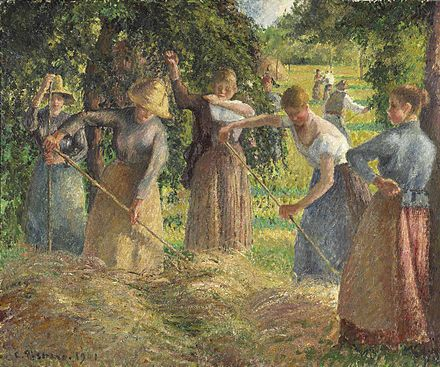
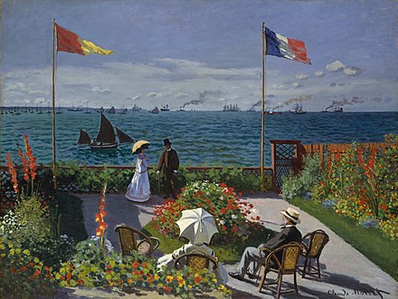

Prior to the Impressionists, other painters, notably such 17th-century Dutch painters as Jan Steen, had
emphasized common subjects, but their methods of composition were traditional. They arranged their
compositions so that the main subject commanded the viewer's attention. J. M. W. Turner, while an artist
of the Romantic era, anticipated the style of impressionism with his artwork. The Impressionists relaxed
the boundary between subject and background so that the effect of an Impressionist painting often
resembles a snapshot, a part of a larger reality captured as if by chance. Photography was gaining
popularity, and as cameras became more portable, photographs became more candid. Photography inspired
Impressionists to represent momentary action, not only in the fleeting lights of a landscape, but in the
day-to-day lives of people.

The development of Impressionism can be considered partly as a reaction by artists to the challenge presented by
photography, which seemed to devalue the artist's skill in reproducing reality. Both portrait and landscape
paintings were deemed somewhat deficient and lacking in truth as photography "produced lifelike images much more
efficiently and reliably".
In spite of this, photography actually inspired artists to pursue other means of creative expression, and rather
than compete with photography to emulate reality, artists focused "on the one thing they could inevitably do
better than the photograph—by further developing into an art form its very subjectivity in the conception of the
image, the very subjectivity that photography eliminated".[32] The Impressionists sought to express their
perceptions of nature, rather than create exact representations. This allowed artists to depict subjectively
what they saw with their "tacit imperatives of taste and conscience".[33] Photography encouraged painters to
exploit aspects of the painting medium, like colour, which photography then lacked: "The Impressionists were the
first to consciously offer a subjective alternative to the photograph".

Another major influence was Japanese ukiyo-e art prints (Japonism). The art of these prints contributed
significantly to the "snapshot" angles and unconventional compositions that became characteristic of
Impressionism. An example is Monet's Jardin à Sainte-Adresse, 1867, with its bold blocks of colour and
composition on a strong diagonal slant showing the influence of Japanese prints.